건설재료시험기사 (2016-05-08 기출문제)
1과목: 콘크리트공학
1. 다음 4조의 압축강도 시험결과 중 변동계수가 가장 큰 것은?
- 19.8, 19.5, 21.0, 19.7
- 20.2, 19.0, 19.0, 21.8
- 21.0, 20.5, 18.5, 20.0
- 18.9, 20.0, 19.6, 21.5
(정답률: 70%)

2. 블리딩에 관한 사항 중 잘못된 것은?
- 블리딩이 많으면 레이턴스도 많아지므로 콘크리트의 이음부에서는 블리딩이 큰 콘크리트는 불리하다.
- 시멘트의 분말도가 높고 단위수량이 적은 콘크리트는 블리딩이 작아진다.
- 블리딩이 큰 콘크리트는 강도와 수밀성이 작아지나 철근콘크리트에서는 철근과의 부착을 증가시킨다.
- 콘크리트치기가 끝나면 블리딩이 발생하며 대략 2~4시간에 끝난다.
(정답률: 83%)
3. 단위 골재량의 절대부피가 800ℓ인 콘크리트에서 잔골재율(S/a)이 40%이고, 굵은 골재의 표건밀도가 2.65g/cm3이면, 단위 굵은 골재량은 얼마인가?
- 848kg
- 1044kg
- 1272kg
- 2120kg
(정답률: 75%)
4. 섬유보강콘크리트에 대한 일반적인 설명으로 틀린 것은?
- 섬유보강콘크리트의 비비기에 사용하는 믹서는 가경식 믹서를 사용하는 것을 원칙으로 한다.
- 섬유보강 콘크리트 1m3중에 점유하는 섬유의 용적 백분율(%)을 섬유 혼입률이라고 한다.
- 보강용 섬유를 혼입하여 주로 인성, 균열억제, 내충격성 및 내마모성 등을 높인 콘크리트를 섬유보강콘크리트라고 한다.
- 강섬유보강콘크리트의 보강효과는 강섬유가 길수록 크며, 섬유의 분산 등을 고려하면 굵은골재 최대치수의 1.5배 이상의 길이를 갖는 것이 좋다.
(정답률: 83%)
5. 팽창콘크리트의 팽창률에 대한 설명으로 틀린 것은?
- 콘크리트의 팽창률은 일반적으로 재령 28일에 대한 시험치를 기준으로 한다.
- 수축보상용 콘크리트의 팽창률은 (150~250)×10-6을 표준으로 한다.
- 화학적 프리스트레스용 콘크리트의 팽창률은 (200~700)×10-6을 표준으로 한다.
- 공장제품에 사용되는 화학적 프리스트레스용 콘크리트의 팽창률은 (200~1,000)×10-6을 표준으로 한다.
(정답률: 80%)
6. 외기온도가 25℃를 넘을 때 콘크리트의 비비기로부터 치기가 끝날 때까지 얼마의 시간을 넘어서는 안 되는가?
- 0.5시간
- 1시간
- 1.5시간
- 2시간
(정답률: 83%)
7. 프리스트레스트 콘크리트에서 프리스트레싱에 대한 설명으로 틀린 것은?
- 긴장재에 대해 순차적으로 프리스트레싱을 실시할 경우는 각 단계에 있어서 콘크리트에 유해한 응력이 생기지 않도록 하여야 한다.
- 긴장재는 이것을 구성하는 각각의 PS강재에 소정의 인장력이 주어지도록 긴장하여야 하는데, 이때 인장력을 설계값 이상으로 주었다가 다시 설계값으로 낮추는 방법으로 시공하여야 한다.
- 고온촉진양생을 실시한 경우, 프리스트레스를 주기전에 완전히 냉각시키면 부재간의 노출된 긴장재가 파단할 우려가 있으므로 온도가 내려가지 않는 동안에 부재에 프리스트레스를 주는 것이 바람직하다.
- 프리스트레싱을 할 때의 콘크리트의 압축강도는 어느 정도의 안전도를 확보하기 위하여 프리스트레스를 준 직후, 콘크리트에 일어나는 최대 압축응력의 1.7배 이상이어야 한다.
(정답률: 88%)
8. 일반콘크리트의 비비기에서 강제식 믹서일 경우 믹서 안에 재료를 투입한 후 비비는 시간의 표준은?
- 30초 이상
- 1분 이상
- 1분 30초 이상
- 2분 이상
(정답률: 76%)
9. 콘크리트의 응결시간 측정에 사용하는 기구로 적당한 것은?
- 길모아 침 시험장치
- 비카트 침 시험장치
- 프록터 관입시험장치
- 구관입 시험장치
(정답률: 40%)
10. 콘크리트 구조물의 전자파레이더법에 의한 비파괴시험에서 진공중에서 전자파의 속도를 C, 콘크리트의 비유전율을 Єr이라 할 때 콘크리트내의 전자파의 속도 V를 구하는 식으로 옳은 것은?
- V=C∙Єr(m/s
- V=C/Єr(m/s)
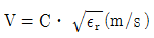
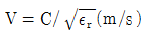
(정답률: 73%)
11. 매스 콘크리트의 온도균열 발생에 대한 검토는 온도균열지수에 의해 평가하는 것을 원칙으로 하고 있다. 온도균열지수에 대한 설명으로 틀린 것은?
- 온도균열지수는 임의 재령에서의 콘크리트 압축강도와 수화열에 의한 온도응력의 비로 구한다.
- 온도균열지수는 그 값이 클수록 균열이 발생하기 어렵고 값이 작을수록 균열이 발생하기 쉽다.
- 일반적으로 온도균열지수가 작으면 발생하는 균열의 수도 많아지고 균열폭도 커지는 경향이 있다.
- 철근의 배치된 일반적인 구조물에서 균열발생을 방지하여야 할 경우 온도균열지수는 1.5이상으로 하여야 한다.
(정답률: 48%)
12. 콘크리트의 설계기준 압축강도가 40MPa이고 22회의 압축강도시험결과로부터 구한 압축강도의 표준편차가 5MPa인 경우 배합강도는? (단, 시험횟수가 20회 및 25회인 경우 표준편차의 보정계수는 각각 1.08, 1.03이다.)
- 47.10MPa
- 47.65MPa
- 48.35MPa
- 48.85MPa
(정답률: 72%)
13. 콘크리트의 비파괴 시험 중 철근부식 여부를 조사할 수 있는 방법이 아닌 것은?
- 전위차 적정법
- 자연전위법
- 분극저항법
- 전기저항법
(정답률: 64%)
14. 한중콘크리트에 대한 설명으로 틀린 것은?
- 하루의 평균기온이 4℃이하가 예상되는 조건일 때는 한중콘크리트로 시공하여야 한다.
- 재료를 가열할 경우, 물 또는 골재를 가열하는 것으로 하며, 시멘트는 어떠한 경우라도 직접 가열할 수 없다.
- 가열한 재료를 믹서에 투입하는 순서는 가열한 물과 시멘트를 먼저 투입하고 다음에 굵은 골재, 잔골재를 투입하는 것이 좋다.
- 한중 콘크리트에는 공기연행 콘크리트를 사용하는 것을 원칙으로 한다.
(정답률: 71%)
15. 공기연행 콘크리트의 공기량에 대한 설명으로 옳은 것은? (단, 굵은 골재의 최대치수는 40mm을 사용한 일반콘크리트로서 노통 노출인 경우)
- 4.0%를 표준으로 하며, 그 허용오차는 ±1.0%로 한다.
- 4.5%를 표준으로 하며, 그 허용오차는 ±1.0%로 한다.
- 4.0%를 표준으로 하며, 그 허용오차는 ±1.5%로 한다.
- 4.5%를 표준으로 하며, 그 허용오차는 ±1.5%로 한다.
(정답률: 80%)
16. 콘크리트의 중성화에 관한 설명으로 틀린 것은?
- 콘크리트 중의 수산화칼슘이 공기중의 탄산가스와 반응하면 중성화가 진행된다.
- 중성화가 철근의 위치까지 도달하면 철근은 부식되기 시작한다.
- 공기중의 탄산가스의 농도가 높을수록, 온도가 높을수록 중성화 속도는 빨라진다.
- 중성화의 대책으로는 플라이애시와 같은 실리카질 혼화재를 시멘트와 혼합하여 사용하는 것이 좋다.
(정답률: 58%)
17. 다음 중 재료 계량의 허용오차 가 가장 큰 것은?
- 혼화제
- 혼화재
- 물
- 시멘트
(정답률: 80%)
18. 일반콘크리트의 배합설계에 대한 설명으로 틀린 것은?
- 구조물에 사용된 콘크리트의 압축강도가 설계기준압축강도보다 작아지지 않도록 현장 콘크리트의 품질변동을 고려하여 콘크리트의 배합강도를 설계기준압축강도보다 충분히 크게 정하여야 한다.
- 제빙화학제가 사용되는 콘크리트의 물-결합재비는 45% 이하로 한다.
- 콘크리트의 수밀성을 기준으로 물-결합재비를 정할 경우 그 값은 50% 이하로 한다.
- 콘크리트의 탄산화 저항성을 고려하여 물-결합재비를 정할 경우 60%이하로 한다.
(정답률: 76%)
19. 내부진동기의 사용 방법으로 적합하지 않은 것은?
- 내부진동기를 하층의 콘크리트 속으로 0.1m 정도 찔러 넣는다.
- 내부진동기는 연직으로 찔러 넣으며 삽입간격은 일반적으로 1.0m 이하로 한다.
- 내부진동기의 1개소당 진동 시간은 다짐할 때 시멘트 페이스트가 표면 상부로 약간 부상하기까지 한다.
- 내부진동기의 사용이 곤란한 장소에서는 거푸집 진동기를 사용해도 좋다.
(정답률: 82%)
20. 일반 콘크리트를 친 후 습윤양생을 하는 경우 습윤상태의 보호기간은 조강포틀랜드 시멘트를 사용한 때 얼마 이상을 표준으로 하는가? (단, 일평균기온이 15℃ 이상인 경우)
- 1일
- 3일
- 5일
- 7일
(정답률: 64%)
2과목: 건설시공 및 관리
21. 디퍼(dipper)용량이 0.8m3일 때 파워 쇼벨(power shovel)의 1일 작업량을 구하면? (단, shovel cycle time : 30sec, dipper 계수 : 1.0, 흙의 토량 변화율(L) : 1.25, 작업효율 : 0.6, 1일 운전시간 : 8시간)
- 286.64m3/day
- 324.52m3/day
- 368.64m3/day
- 452.50m3/day
(정답률: 66%)
22. 발파시에 수직갱에 물이 고여 있을 때의 심빼기 발파공법으로 가장 적당한 것은?
- 스윙 컷(Swing Cut)
- V컷 (V Cut)
- 피라미드 컷(Pyramid Cut)
- 번 컷(Burn Cut)
(정답률: 78%)
23. 공정관리기법 가운데 PERT에 대한 설명으로 옳은 것은?
- 경험이 있는 사업에 적용한다.
- 확률적 모델이다.
- 1점 시간추정방법으로 공기를 추정한다.
- 활동중심의 일정계산을 한다.
(정답률: 62%)
24. 댐 기초의 그라우팅에 대한 일반적인 설명으로 틀린 것은?
- 콘솔리데이션 그라우팅은 기초 전반에 그라우팅하여 기초지반을 보강한다.
- 커튼그라우팅은 댐 축방향 기초 상류 쪽에 그라우팅한다.
- 그라우팅 깊이는 커튼그라우팅이 콘솔리데이션 그라우팅보다 깊다.
- 콘솔리데이션 그라우팅은 댐 축방향 기초 하류 쪽에 그라우팅한다.
(정답률: 66%)
25. 지반중에 초고압으로 가압된 경화재를 에어제트와 함께 이중관 선단에 부착된 분사노즐로 분사시켜 지반의 토립자를 교반하여 경화재와 혼합 고결시키는 공법은?
- LW 공법
- SGR 공법
- SCW 공법
- JSP 공법
(정답률: 76%)
26. 흙의 굴착뿐만 아니라 싣기, 운반, 사토, 정지 등의 기능을 함께 가진 토공기계는?
- 불도져
- 스크레이퍼
- 드래그라인
- 백호우
(정답률: 61%)
27. 필형 댐(fill type dam)의 설명으로 옳은 것은?
- 필형 댐은 여수로가 반드시 필요하지는 않다.
- 암반강도 면에서는 기초암반에 걸리는 단위 체적당의 힘은 콘크리트 댐보다 크므로 콘크리트 댐보다 제약이 많다.
- 필형 댐은 홍수시월류에도 대단히 안정하다.
- 필형 댐에서는 여수로를 댐 본체(本體)에 설치할 수 없다.
(정답률: 63%)
28. 터널굴착공법 중 쉴드(shield)공법의 장점으로서 옳지 않은 것은?
- 밤과 낮에 관계없이 작업이 가능하다.
- 지하의 깊은 곳에서 시공이 가능하다.
- 소음과 진동의 발생이 적다.
- 지질과 지하수위에 관계없이 시공이 가능하다.
(정답률: 68%)
29. 다른 형식보다 재료가 적게 소요되고 높은 파고에서도 안전성이 높으며 지반이 양호하고 수심이 얕은 곳에 축조하는 방파제는?
- 부양 방파제
- 직립식 방파제
- 혼성식 방파제
- 경사식 방파제
(정답률: 79%)
30. 터널의 시공에 사용되는 숏크리트 습식공법의 장점으로 틀린 것은?
- 분진이 적다.
- 품질관리가 용이하다.
- 장거리 압송이 가능하다.
- 대규모 터널 작업에 적합하다.
(정답률: 79%)
31. 성토시공 공법 중 두께가 90~120cm로 하천제방, 도로, 철도의 출제에 시공되며, 층마다 일정 기간 동안 방치하여 자연침하를 기다려 다음 층을 위에 쌓아 올리는 방법은?
- 물 다짐 공법
- 비계 쌓기법
- 전방 쌓기법
- 수평층 쌓기법
(정답률: 66%)
32. 말뚝의 지지력을 결정하기 위한 방법 중에서 가장 정확한 것은?
- 말뚝재하시험
- 동역학적공식
- 정역학적공식
- 허용지지력 표로서 구하는 방법
(정답률: 81%)
33. 원지반의 토량 500m3를 덤프 트럭(5m3적재) 2대로 운반하면 운반소요 일수는? (단, L=1.20이고, 1대 1일당 운반횟수 5회)
- 12일
- 14일
- 16일
- 18일
(정답률: 68%)
34. 아스팔트 포장에서 표층에 대한 설명으로 틀린 것은?
- 노상 바로 위의 인공층이다.
- 교통에 의한 마모와 박리에 저항하는 층이다.
- 표면수가 내부로 침입하는 것을 막는다.
- 기층에 비해 골재의 치수가 작은 편이다.
(정답률: 72%)
35. PSC 교량가설공법과 시공상의 특징에 대한 설명이 적절하지 않은 것은?
- 연속압출공법(ILM) : 시공부위의 모멘트감소를 위해 steel nose(추진코) 사용
- 동바리공법(FSM) : 콘크리트 치기를 하는 경간에 동바리를 설치하여 자중 등의 하중을 일시적으로 동바리가 지지하는 방식
- 캔틸레버공법(FCM) : 교량외부의 제작장에서 일정길이만큼 제작 후 연결시공
- 이동식 비계공법(MSS) : 교각위에 브래킷 설치 후 그 위를 이동하며 콘크리트 타설
(정답률: 74%)
36. 아래의 표에서 설명하는 아스팔트 포장의 파손은?
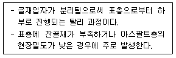
- 영구변형(Rutting)
- 라벨링(Ravelling)
- 블록 균열
- 피로 균열
(정답률: 79%)
37. 토량 변화율 L=1.25, C=0.9인 사질토로 35000m3를 성토할 경우 운반토량은?
- 33333m3
- 39286m3
- 48611m3
- 54374m3
(정답률: 72%)
38. 점보드릴(Jumbo drill)에 대한 설명으로 옳지 않은 것은?
- 착암기를 싣고 굴착작업을 할 수 있도록 되어있는 장비이다.
- 한 대의 Jumbo 위에는 여러 대의 착암기를 장치할 수 있다.
- 상ㆍ하로 자유로이 이동작업이 가능하나 좌ㆍ우로의 조정은 불가능하다.
- NATM 공법에 많이 사용한다.
(정답률: 80%)
39. 네트워크 공정표를 작성할 때의 기본적인 원칙을 설명한 것으로 잘못된 것은?
- 네트워크의 개시 및 종료 결합점은 두 개 이상으로 구성되어야 한다.
- 무의미한 더미가 발생하지 않도록 한다.
- 결합점에 들어오는 작업군이 모두 완료되지 않으면 그 결합점에서 나가는 작업은 개시할 수 없다.
- 가능한 요소 작업 상호간의 교차를 피한다.
(정답률: 71%)
40. 국내 도로 파손의 주요 원인은 소성변형으로 전체 파손의 큰 부분을 차지하고 있다. 최근 이러한 소성변형의 억제방법 중 하나로 기존의 밀입도 아스팔트 혼합물 대신 상대적으로 큰 입경의 골재를 이용하는 아스팔트 포장방법을 무엇이라 하는가?
- SBS
- SBR
- SMA
- SMR
(정답률: 65%)
3과목: 건설재료 및 시험
41. 제철소에서 발생하는 산업부산물로서 찬공기나 냉수로 급냉한 후 미분쇄하여 사용하는 혼화재는?
- 고로슬래그 미분말
- 플라이애시
- 화산회
- 실리카흄
(정답률: 76%)
42. 다음의 목재 중요 성분 중 세포 상호간 접착제 역할을 하는 것은?
- 셀룰로오스
- 리그닌
- 탄닌
- 수지
(정답률: 56%)
43. 암석의 종류 중 퇴적암이 아닌 것은?
- 사암
- 혈암
- 석회암
- 안산암
(정답률: 61%)
44. 강모래를 이용한 콘크리트와 비교한 부순 잔골재를 이용한 콘크리트의 특징을 설명한 것으로 틀린 것은?
- 동일 슬럼프를 얻기 위해서는 단위수량이 더 많이 필요하다.
- 미세한 분말량이 많아질 경우 건조수축률은 증대한다.
- 미세한 분말량이 많아짐에 따라 응결의 초결시간과 종결시간이 길어진다.
- 미세한 분말량이 많아지면 공기량이 줄어들기 때문에 필요시 공기량을 증가시켜야 한다.
(정답률: 53%)
45. 골재의 안정성 시험(KS F 2507)에 대한 설명으로 틀린 것은?
- 기상작용에 대한 골재의 내구성을 조사할 목적으로 실시한다.
- 시험용 잔골재는 5mm체를 통과하는 골재를 사용한다.
- 시험용 굵은골재는 5mm체에 잔류하는 골재를 사용한다.
- 시험용 용액은 황산나트륨 포화용액으로 한다.
(정답률: 38%)
46. 아스팔트 신도시험에 대한 설명으로 틀린 것은?
- 별도의 규정이 없는 한 시험할 때 온도는 (20±0.5℃)을 적용한다.
- 별도의 규정이 없는 한 인장하는 속도는 5±0.25cm/min을 적용한다.
- 저온에서 시험할 때 온도는 4℃를 적용한다.
- 저온에서 시험라 때 인장하는 속도는 1cm/min을 적용한다.
(정답률: 47%)
47. 댐, 기초와 같은 매시브한 구조물에 적합하며 조기강도는 적으나 내침식성과 내구성이 크고 안정하며 수축이 적은 시멘트는?
- 내황산염 포틀랜드시멘트
- 중용열 포틀랜드시멘트
- 알루미나시멘트
- 조강 포틀랜드시멘트
(정답률: 63%)
48. 석재를 모양 및 치수에 의해 구분할 때 아래표의 내용에 해당하는 것은?
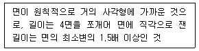
- 견치석
- 판석
- 각석
- 사고석
(정답률: 70%)
49. 다음 혼화재료 중 콘크리트의 응결시간 에 영향을 미치지 않는 것은?
- 염화칼슘
- 인산염
- 당류
- 라텍스
(정답률: 67%)
50. 포졸란을 사용한 콘크리트의 성질에 대한 설명으로 틀린 것은?
- 수밀성이 크고 발열량이 적다
- 해수 등에 대한 화학적 저항성이 크다
- 워커빌리티 및 피니셔빌리티가 좋다.
- 강도의 증진이 빠르고 조기강도가 크다
(정답률: 65%)
51. 골재의 체가름시험에 사용하는 시료의 최소건조질량에 대한 설명으로 틀린 것은?
- 굵은 골재의 경우 사용하는 골재의 최대치수(mm)의 0.2배를 시료의 최소 건조 질량(kg)으로 한다.
- 잔골재의 경우 1.18mm체를 95%(질량비)이상 통과하는 것에 대한 최소 건조 질량은 100g으로 한다.
- 잔골재의 경우 1.18mm체를 5%(질량비)이상 남는 것에 대한 최소 건조 질량은 500g으로 한다.
- 구조용 경량 골재의 최소 건조 질량은 보통 중량 골재의 최소 건조 질량의 2배로 한다.
(정답률: 51%)
52. 콘크리트용 강섬유에 대한 설명으로 틀린 것은?
- 형상에 따라 직선섬유와 이형섬유가 있다.
- 강섬유의 인장강도 시험은 강섬유 5ton마다 10개 이상의 시료를 무작위로 추출해서 수행한다.
- 강섬유의 평균인장강도는 200MPa 이상이 되어야 한다.
- 강섬유는 16℃ 이상의 온도에서 지름 안쪽 90˚ 방향으로 구부렸을 때 부러지지 않아야 한다.
(정답률: 75%)
53. 스트레이트 아스팔트와 비교할 떄 고무화 아스팔트의 장점이 아닌 것은?
- 감온성이 크다.
- 부착력이 크다.
- 탄성이 크다.
- 내후성이 크다.
(정답률: 78%)
54. 목재의 건조방법 중 인공건조법이 아닌 것은?
- 끓임법(자비법)
- 열기건조법
- 공기건조법
- 증기건조법
(정답률: 73%)
55. 다음은 굵은 골재를 시험한 결과이다. 이 결과를 이용하여 굵은 골재의 공극률을 구하면?
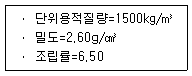
- 42.3%
- 43.4%
- 56.6%
- 57.7%
(정답률: 51%)
56. 시멘트의 성질 및 특성에 대한 설명으로 틀린 것은?
- 시멘트의 분말도는 일반적으로 비표면적으로 표시하며 시멘트 입자의 굵고 가는 정도로 단위는 cm2/g이다.
- 시멘트 응결이란 시멘트 풀이 유동성과 점성을 상실하고 고화하는 현상을 말한다.
- 시멘트가 공기중의 수분 및 이산화탄소를 흡수하여 가벼운 수화반응을 일으키게 되는데, 이것을 풍화라 한다.
- 시멘트의 강도시험은 시멘트 페이스트 강도시험으로 측정한다.
(정답률: 49%)
57. 시멘트의 저장 및 사용에 대한 설명 중 틀린 것은?
- 시멘트는 방습적인 구조물에 저장한다.
- 시멘트는 13포대 이하로 쌓는 것이 바람직하다.
- 저장 중에 약간 굳은 시멘트는 품질검사 후 사용한다.
- 일반적으로 50℃이하 온도의 시멘트를 사용하면 콘크리트의 품질에 이상이 없다.
(정답률: 68%)
58. 아스팔트의 침입도 지수(PI)를 구하는 식으로 옳은 것은? (단,
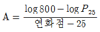
이고 P25는 25℃에서의 침입도이다.)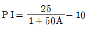
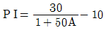
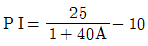
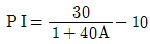
(정답률: 62%)
59. 강을 제조방법에 따라 분류한 것으로 볼 수 없는 것은?
- 평로강
- 전기로강
- 도가니강
- 합금강
(정답률: 58%)
60. 수중에서 폭발하며 발화점이 높고 구리와 화합하면 위험하므로 뇌관의 관체는 알루미늄을 사용하는 기폭약은?
- 뇌산수은
- 질화납
- DDNP
- 칼릿
(정답률: 46%)
4과목: 토질 및 기초
61. 점착력이 1.4t/m2, 내부마찰각이 30˚, 단위중량이 1.85t/m3인 흙에서 인장균열 깊이는 얼마인가?
- 1.74m
- 2.62m
- 3.45m
- 5.24m
(정답률: 46%)
62. 흙의 다짐에 대한 설명으로 틀린 것은?
- 다짐에너지가 증가할수록 최대 건조단위중량은 증가한다.
- 최적함수비는 최대 건조단위중량을 나타낼 때의 함수비이며, 이때 포화도는 100%이다.
- 흙의 투수성 감소가 요구될 때에는 최적함수비의 습윤측에서 다짐을 실시한다.
- 다짐에너지가 증가할수록 최적함수비는 감소한다.
(정답률: 39%)
63. 연약한 점성토의 지반특성을 파악하기 위한 현장조사 시험방법에 대한 설명 중 틀린 것은?
- 현장베인시험은 연약한 점토층에서 비배수 전단강도를 직접 산정할 수 있다.
- 정적콘관입시험(CPT)은 콘지수를 이용하여 비배수 전단강도 추정이 가능하다.
- 표준관입시험에서의 N값은 연약한 점성토지반특성을 잘 반영해 준다.
- 정적콘관입시험(CPT)은 연속적인 지층분류 및 전단강도 추정 등 연약점토 특성분석에 매우 효과적이다.
(정답률: 54%)
64. 그림과 같은 지층단면에서 지표면에 가해진 5t/m2의 상재하중으로 인한 점토층(정규압밀점토)의 1차압밀 최종침하량(S)을 구하고, 침하량이 5cm 일 때 평균압밀도(U)를 구하면?
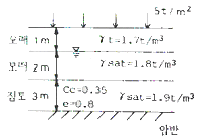
- S = 18.5cm, U = 27%
- S = 14.7cm, U = 22%
- S = 18.5cm, U = 22%
- S = 14.7cm, U = 27%
(정답률: 40%)
65. 폭 10cm, 두께 3mm인 Paper Drain설계 시 Sand drain의 직경과 동등한 값(등치환산원의 지름)으로 볼 수 있는 것은?(단, 형상계수는 0.75)
- 2.5cm
- 5.0cm
- 7.5cm
- 10.0cm
(정답률: 45%)
66. 그림과 같이 흙입자가 크기가 균일한 구(직경 : d)로 배열되어 있을 때 간극비는?
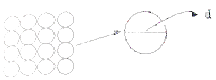
- 0.91
- 0.71
- 0.51
- 0.35
(정답률: 54%)
67. Mohr 응력원에 대한 설명 중 옳지 않은 것은?
- 임의 평면의 응력상태를 나타내는데 매우 편리하다.
- 평면기점(origin of plane, Op)은 최소주응력을 나타내는 원호상에서 최소주응력면과 평행성이 만나는 점을 말한다.
- σ1과 σ3의 차의 벡터를 반지름으로 해서 그린 원이다.
- 한 면에 응력이 작용하는 경우 전단력이 0이면, 그 연직응력을 주 응력으로 가정한다.
(정답률: 57%)
68. 동일한 등분포 하중이 작용하는 그림과 같은 (A)와 (B) 두 개의 구형기초판에서 A와 B점의 수직 Z되는 깊이에서 증가되는 지중응력을 각각 σA, σB가 할 때 다음 중 옳은 것은? (단, 지반 흙의 성질은 동일함)
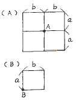
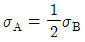
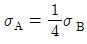
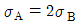
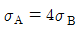
(정답률: 48%)
69. 콘크리트 말뚝을 마찰말뚝으로 보고 설계할 때, 총 연직하중을 200ton, 말뚝 1개의 극한지지력을 89ton, 안전율을 2.0으로 하면 소요말뚝의 수는?
- 6개
- 5개
- 3개
- 2개
(정답률: 50%)
70. 흙의 분류에 사용되는 Casagrande 소성도에 대한 설명으로 틀린 것은?
- 세립토를 분류하는데 이용된다.
- U선은 액성한계와 소성지수의 상한선으로 U선 위쪽으로는 측점이 있을 수 없다.
- 액성한계 50%를 기준으로 저소성(L) 흙과 고소성(H) 흙으로 분류한다.
- A선 위의 흙은 실트(M) 또는 유기질토(O)이며, A선 아래의 흙은 점토(C)이다.
(정답률: 51%)
71. 표준관입시험(S.P.T)결과 N치가 25 이었고, 그 때 채취한 교란시료로 입도시험을 한 결과 입자가 둥글고, 입도분포가 불량할 때 Dunham 공식에 의해서 구한 내부 마찰각은?
- 32.3˚
- 37.3˚
- 42.3˚
- 48.3˚
(정답률: 39%)
72. 다음 그림에서 C점의 압력수두 및 전수두 값은 얼마인가?
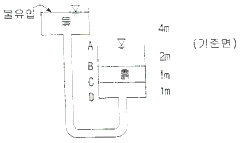
- 압력수두 3m, 전수두 2m
- 압력수두 7m, 전수두 0m
- 압력수두 3m, 전수두 3m
- 압력수두 7m, 전수두 4m
(정답률: 63%)
73. 수평방향투수계수가 0.12cm/sec이고, 연직방향 투수계수가 0.03cm/sec일 때 1일 침투유량은?
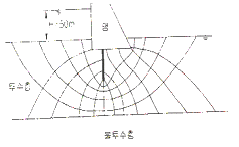
- 970m3/day/m
- 1080m3/day/m
- 1220m3/day/m
- 1410m3/day/m
(정답률: 62%)
74. 두께가 4미터인 점토층이 모래층 사이에 끼어있다. 점토층에 3t/m2의 유효응력이 작용하여 최종침하량이 10cm가 발생하였다. 실내압밀시험결과 측정된 압밀계수(Cv) =2×10-4cm2/sec라고 할 때 평균압밀도 50%가 될 때까지 소요일수는?
- 288일
- 312일
- 388일
- 456일
(정답률: 41%)
75. 흙의 다짐에 있어 램머의 중량이 2.5kg, 낙하고 30cm, 3층으로 각층 다짐횟수가 25회일 때 다짐에너지는? (단, 몰드의 체적은 1000cm3이다.)
- 5.63kg∙㎝/cm3
- 5.96kg∙㎝/cm3
- 10.45kg∙㎝/cm3
- 0.66kg∙㎝/cm3
(정답률: 47%)
76. 그림과 같은 지반에서 유효응력에 대한 점착력 및 마찰각이 각각 c′=1.0t/m2, ø′=20°일 때 A점에서의 전단강도t/m2)는?
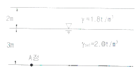
- 3.4t/m2
- 4.5t/m2
- 5.4t/m2
- 6.6t/m2
(정답률: 48%)
77. 다음 중 사면의 안정해석 방법이 아닌 것은?
- 마찰원법
- 비숍(Bishop)의 방법
- 펠레니우스(Fellenius) 방법
- 테르자기(Terzaghi)의 방법
(정답률: 59%)
78. 말뚝재하시험 시 연약점토지반인 경우는 pile의 타입 후 20여일 지난 다음 말뚝재하시험을 한다. 그 이유는?
- 주면 마찰력이 너무 크게 작용하기 때문에
- 부마찰력이 생겼기 때문에
- 타입시 주변이 교란되었기 때문에
- 주위가 압축되었기 때문에
(정답률: 56%)
79. 최대주응력이 10t/m2, 최소주응력이 4t/m2일 때 최소주응력 면과 45˚를 이루는 평면에 일어나는 수직응력은?
- 7t/m2
- 3t/m2
- 6t/m2
- 4√2t/m2
(정답률: 38%)
80. 간극률 50%이고, 투수계수가 9×10-2㎝/sec인 지반의 모관 상승고는 대략 어느 값에 가장 가까운가? (단, 흙입자의 형상에 관련된 상수 C=0.3cm2, Hazen공식 : k=c1×D210에서 c1=100으로 가정)
- 1.0cm
- 5.0cm
- 10.0cm
- 15.0cm
(정답률: 41%)